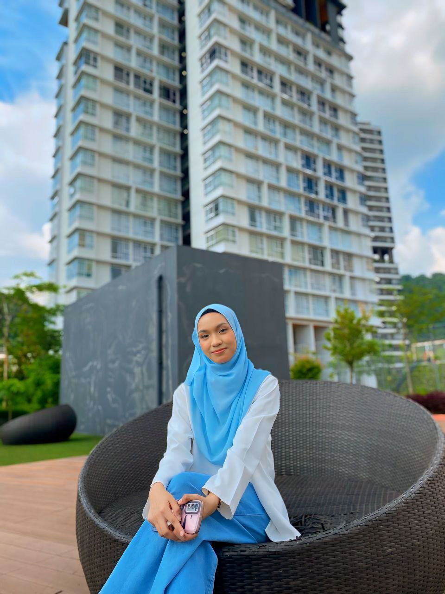

Hi, I'm Farah!
Welcome to my personal website. My name is Farah Irdina Binti Ahmad Zulkiflee, a second year second sem student at International Islamic University Malaysia (IIUM). I am currently enrolled in Bachelor in Computer Science (honours) program. So, grab a cup of coffee, explore my content and let's embark on this journey together. I'm excited to share my journey with you!